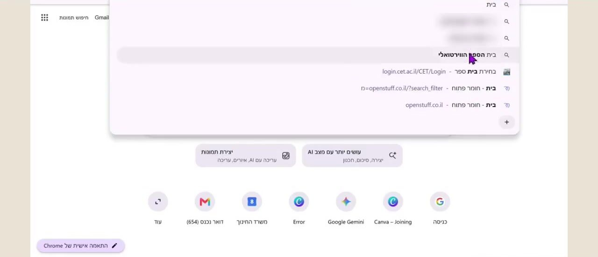
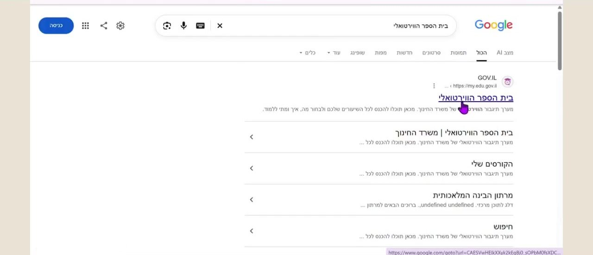
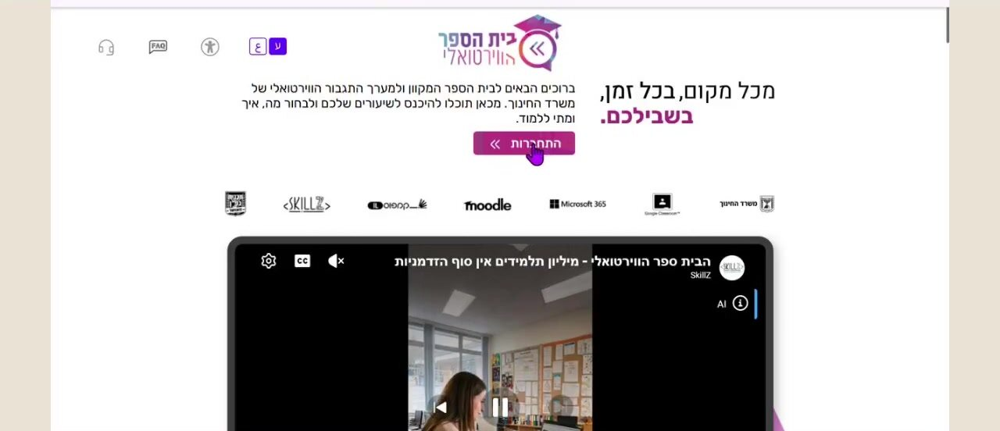
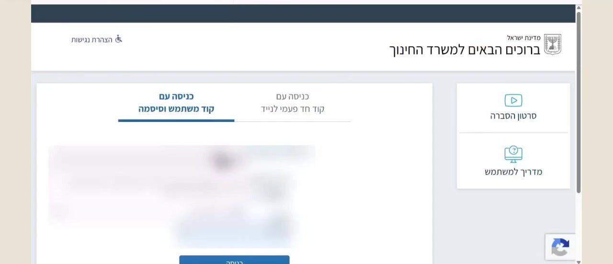
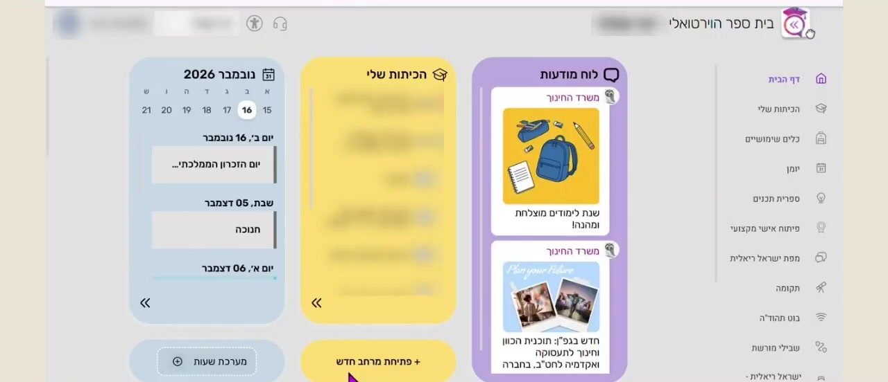

מחפשות בגוגל: בית הספר הווירטואלי
מקלידות בשורת החיפוש ובוחרות בהצעה.

לוחצות על התוצאה בית הספר הווירטואלי
זה האתר של משרד החינוך (my.edu.gov.il).

באתר לוחצות על התחברות
הכפתור הסגול, מתחת לכותרת.

בוחרות כניסה עם קוד משתמש וסיסמה
ממלאות את הפרטים של משרד החינוך ולוחצות כניסה.

אנחנו בפנים! 😊
זה המסך הראשי של בית הספר הווירטואלי.
